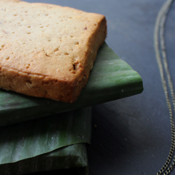

Lembas

Desription
"Lembas, Elvish waybread. One small bite is enough to fill the
stomach of a grown man."
Lembas translates to journey bread and has said to leave a man
filled for an entire days journey. This waybread is supposedly
tastier than cram and the recipe was closely guarded and was only
given to outsiders once, the fellowship.
The leaves from the Mallorn tree in Lothlorien wraps and keeps the
lembas fresh for days if kept unbroken. Mallorn trees grew in
Lothlorien and the leaves turned gold in the autumn.
Ingredients
- 1 1/2 stick 12T - butter, soften
- 1/2 cup - brown sugar
- 1/3 cup - honey
- 2 - eggs large
- 1 T - orange blossom water
- 2 cups - all purpose flour
- 1/2 cup - almond meal
- 1 - lemon zest
- 1 T - vanilla extract
- 1/3 cup - sliced almonds
- 6 - banana leaves large
Steps
- Preheat oven to 360F.
- Cream together the softened butter, sugar, and honey.
- Add your orange blossom water, vanilla extract, and lemon zest.
Mix to combine.
- Add one egg at a time and scrape the batter in between each
addition.
- Add your four and almond meal in two to three additions. Scrape
in between each addition.
- Add almond slices and mix to combine.
- Wrap the dough in plastic wrap. Keep the dough 1/2" thick and
square to make it easier to cut later.
- Refrigerate for 30-40 minutes.
- Once the dough is firm, cut it into 2"x3" rectangles, it should
be 1/2" thick. My leaves are 14" in length and 11" in width. If
your leaves are bigger or smaller, cut your leaves
accordingly.
- Lightly grease your baking pan. You can keep the lembas fairly
close together since these are not going to spread.
- Bake for 20-30 minutes. It should be firm and light golden
brown. Let these cool before wrapping.